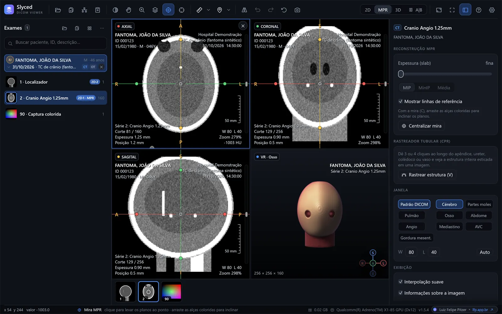
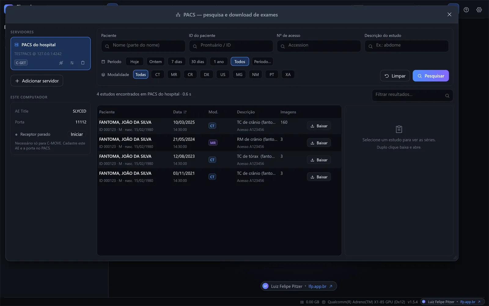

Comparação de exames
Atual e anterior lado a lado, sobrepostos, em cortina ou em xadrez, alinhados automaticamente (por referencial, pontos ou informação mútua), com a variação das medidas em porcentagem.

TC, RM, RX e US direto do CD, da pasta, do ZIP ou do PACS. Um único Slyced.exe de cerca de 20 MB, do Windows 7 ao 11. Ou direto no navegador.
Sem exame à mão? Veja com um exame sintético →

um único executável, sem instalador
pacotes: x64, ARM64 e Windows 7 de 64 e 32 bits
do Windows 7 ao Windows 11
enviados sem você pedir: sem telemetria nem contas
Role a página e veja o que o Slyced faz com um exame.
Axial, coronal e sagital ligados por uma mira, como no Slyced. Arraste em qualquer plano e veja os outros dois acompanharem.
Um fantoma sintético calculado aqui na página, com crânio, ventrículos, vasos contrastados e uma pequena lesão. No Slyced, o mesmo vale para exames reais, com slab MIP/MinIP, planos oblíquos e CPR.

Do CD do hospital ao PACS, das medidas à comparação com o exame anterior: as ferramentas do dia a dia, sem cadastro e sem instalar nada.
Atual e anterior lado a lado, sobrepostos, em cortina ou em xadrez, alinhados automaticamente (por referencial, pontos ou informação mútua), com a variação das medidas em porcentagem.
C-FIND, C-GET e C-MOVE com receptor embutido, ou DICOMweb. Fila de downloads, limpeza automática e linha do tempo com todos os exames do paciente.

VR com predefinições (osso, angio, pele, pulmão…), MIP, MinIP e superfície; recorte e iluminação simples, realista ou cinemática.
Slab com MIP, MinIP ou média, planos oblíquos e rastreador tubular para apêndice, ureter, colédoco e vasos.
Distância, ângulo, ROI elíptica, densidade em HU com o tecido provável e volume por três diâmetros.
Realces de gás livre, gordura mesentérica e cálculos; fases com e sem contraste (ΔHU e subtração) e calculadora de hérnia incisional.
Pastas, CD/DVD com DICOMDIR e ZIP sem descompactar. JPEG (12 bits, sem perdas, aritmético), JPEG-LS, JPEG 2000, RLE, multiframe e cor.
F11 deixa só a imagem; os controles aparecem quando o mouse se mexe. Temas escuro, claro ou de alto contraste.
Roda do download ou de um pendrive: sem instalador, sem administrador, sem Visual C++ Redistributable.
O mesmo código vira o executável para Windows e o WebAssembly da versão web. Os cortes são lidos em paralelo, e tudo o que é 3D é desenhado pela placa de vídeo.
Escolha o pacote do seu Windows na página da versão mais recente, ou use a versão web sem baixar nada.
Os pacotes ainda não têm assinatura digital: se o Windows mostrar “O Windows protegeu o computador”, clique em Mais informações → Executar assim mesmo. Confira o arquivo com o SHA256SUMS.txt do release. Detalhes no manual.
Baixe o Slyced, descompacte e abra o Slyced.exe. Clique em Abrir pasta e escolha a unidade do CD, ou arraste a pasta do CD para a janela: ele encontra o DICOMDIR e lista os exames, sem instalar nada. Sem leitor de CD, copie o conteúdo para um pendrive ou ZIP, que o Slyced abre sem descompactar.
Sim. O Slyced tem pacotes para Windows 7 SP1, 8 e 8.1, de 64 e de 32 bits, além de Windows 10 e 11 (x64 e ARM64). É gratuito e de código aberto.
Sim, na versão web experimental. Os arquivos são lidos pelo próprio navegador e não são enviados a nenhum servidor. Por enquanto ela não tem PACS nem JPEG-LS.
Não. Não há telemetria, contas nem verificação automática de atualizações. O programa só se conecta aos servidores PACS que você cadastrar, e só quando você busca ou baixa um exame.
TC, RM, RX e US em DICOM, de pastas, CD/DVD com DICOMDIR e ZIP. Lê imagens sem compressão e comprimidas em JPEG (inclusive 12 bits e sem perdas), JPEG-LS, JPEG 2000 e RLE, multiframe e coloridas.
Sim: MPR axial, coronal e sagital com planos oblíquos e slab (MIP, MinIP ou média), reconstrução curva (CPR) e 3D na placa de vídeo, com VR, MIP, MinIP e superfície.
Na versão para Windows, sim: pesquisa e baixa exames por DICOM (C-FIND, C-GET e C-MOVE, com receptor embutido) ou por DICOMweb (QIDO-RS e WADO-RS).
O Slyced não tem certificação como dispositivo médico (ANVISA, FDA ou CE). Use-o para visualizar e estudar exames, não como única base para diagnóstico.